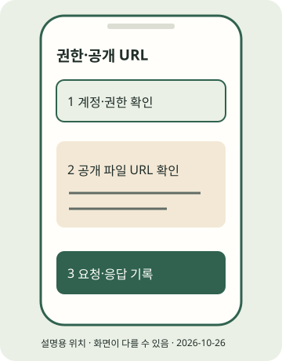

(실습) 실습편 / 8
(실습) 8. 선택 · API 자동 게시
권한·토큰·공개 파일과 요청 경로를 구분한다.
2026년 10월 조사 기준 · 확인일 2026-10-26 · 근거: PRAC-01 PRAC-02 PRAC-03 PRAC-04 PRAC-05 PRAC-06 PRAC-07 PRAC-08 PRAC-09 PRAC-11 PRAC-12 PRAC-13 PRAC-14 PRAC-15 API-01 · E2E 한눈에 보기
진행 기록은 자바스크립트를 켜면 이 브라우저에 저장합니다.
이 실습의 흐름
선택 심화입니다. 실습 7을 마치는 데 필요하지 않습니다. 문서상 본인 계정 테스트 조건과 일반 공개는 구분합니다. 개발자 등록·권한·실게시·일반 독자 공개를 작업자가 검증하지 않았습니다. API 호출은 본인이 판단하며 이 교재의 검증은 모킹입니다.

STEP 01 · 개발자 앱과 역할 준비
개발자 앱과 역할 준비
지금 하는 일
문서의 Instagram Login 앱 생성 흐름을 확인합니다.
왜 하는지
앱 로그인·권한·계정 유형이 맞아야 요청할 수 있습니다.
따라 하기
- Meta App Dashboard에서 본인 개발자 등록·인증 안내를 확인합니다. 등록 마법사의 현행 화면은 미확인입니다.
- 문서 기준은 Create App → Other → Next → Business → Next → 앱 이름·연락 이메일 → Next → Instagram → Set up입니다. 다른 use case 마법사가 보이면 그대로 강요하지 말고 Instagram 제품과 API setup 항목을 확인합니다.
- Instagram → API setup with Instagram login의 토큰 영역에 본인 공개 계정을 추가합니다. 계정·역할은 App Roles → Roles 또는 API setup에서 확인합니다. Administrator/Developer/Tester 중 본인 역할을 확인합니다.
- 본인 소유·관리 계정 Standard Access와 외부 고객용 Advanced Access·앱 검수를 구분합니다. 개발 모드의 역할 사용자 테스트와 일반 공개는 별개입니다. 공통 App Modes는 비역할 사용자 비노출을 설명하고 생성 문서의 live data 검수 안내와 범위 차이가 있습니다. 검수 면제만으로 일반 독자 공개를 보장하지 않습니다.
이렇게 보이면 성공
문서와 본인 대시보드에서 Instagram Login 제품·대상 계정·역할·권한을 구분했습니다. 실제 계정 API 게시 성공은 아직 확인 전입니다.
이렇게 보이면?
- Instagram 제품이 없으면 앱 유형/use case를 공식 생성 문서와 비교하세요.
- 권한 오류를 해결하려고 불필요한 전체 권한이나 Live 전환을 먼저 하지 마세요.
Windows
이 단계는 Windows와 무관한 휴대폰 또는 웹 작업입니다. 휴대폰 OS와 앱 버전의 화면 차이는 공식 도움말로 확인하세요.macOS
이 단계는 macOS와 무관한 휴대폰 또는 웹 작업입니다. 휴대폰 OS와 앱 버전의 화면 차이는 공식 도움말로 확인하세요.STEP 02 · 토큰과 로컬 .env 준비
토큰과 로컬 .env 준비
지금 하는 일
토큰·계정 ID·버전을 비공개 환경에 둡니다.
왜 하는지
비밀 값을 공개 코드나 명령 기록에 남기지 않기 위해서입니다.
따라 하기
- 공식 문서의 Instagram → API setup with Instagram business login → Generate token 경로를 확인합니다. 다른 생성 문서에는 with Instagram login이라고 적혀 있으므로 실제 화면에서 대상 항목을 확인합니다.
- 문서상 Generate token은 60일 장기, Business Login OAuth는 1시간 단기입니다. 실제 expires_in·권한 취소 상태를 확인합니다.
.env.example을.env로 복사하고 본인 편집기에서 IG_ACCESS_TOKEN·IG_USER_ID를 입력합니다. 아래 예시는 빈 값이며 실제 토큰을 채팅·스크린샷에 넣지 않습니다. 기본 버전은 v26.0(2026-07-29 출시, PRAC-01)입니다. 환경변수가 .env보다 우선합니다.- 대상 ID·사용자 이름 확인은 공식 문서의
GET /v26.0/me?fields=user_id,username를 비공개 실행 환경에서 인증해 확인합니다. 토큰이 다른 계정 것이 아닌지 확인하세요. - 장기 토큰은 발급 24시간 이후·만료 전에
GET https://graph.instagram.com/refresh_access_token의grant_type=ig_refresh_token·access_token으로 다시 60일 갱신할 수 있습니다. 비공개 환경에서 공식 문서대로 실행하고 반환된 값·만료 정보를 확인합니다. 만료했다면 재인증합니다. 키트는 자동 갱신하지 않습니다.
IG_ACCESS_TOKEN=
IG_USER_ID=
IG_API_VERSION=v26.0이렇게 보이면 성공
토큰과 숫자 계정 ID가 본인 컴퓨터의 .env 또는 환경변수에만 있고 공개 저장소에는 없습니다. 대상 계정과 만료 시점을 본인이 확인했습니다.
이렇게 보이면?
- 토큰 만료면 갱신 요청을 반복하지 말고 재인증하세요.
- 권한은 instagram_business_basic·instagram_business_content_publish를 확인합니다. *_publishing으로 오기하지 않습니다.
Windows
Copy-Item .env.example .envmacOS
cp .env.example .envSTEP 03 · 승인 파일로 공개 URL 만들기
승인 파일로 공개 URL 만들기
지금 하는 일
JPEG와 MP4만 별도 공개 폴더로 준비합니다.
왜 하는지
Instagram Login은 이미지·동영상 모두 Meta가 읽을 공개 URL이 필요합니다.
따라 하기
- 실습 6 승인을 마친 본인 실제 자료 출력 폴더에 아래 도우미를 실행합니다. 예시는 first-post지만 합성 샘플은 live 게시할 수 없습니다.
- 도우미는 승인된 JPEG/MP4만 새 폴더에 복사합니다. .env·검수표·설정·토큰은 복사하지 않습니다. 네트워크 요청은 없습니다.
- 본인의 별도 공개 GitHub 저장소 → Add file → Upload files에서 hosting/first-post 안의 cards 폴더와 reel.mp4를 함께 드래그 앤 드롭하고 Commit changes로 저장합니다.
- Settings → Pages → Build and deployment → Source: Deploy from a branch에서 branch와 /(root)를 고르고 배포 완료를 확인합니다. 업로드를 하위 폴더에 했다면 기본 URL에도 그 경로를 포함합니다.
- 로그인하지 않은 창에서
https://사용자.github.io/저장소/cards/card-01.jpg와/reel.mp4가 파일 자체로 열리는지 확인합니다.curl -I -L "실제 파일 URL"로 헤더·최종 URL·MIME도 확인할 수 있지만 실제 GET 파일 열기를 대신하지 않습니다. - 기본 URL은 두 파일 경로의 공통 부모 폴더입니다. localhost·로컬 경로·Drive 미리보기·/blob/ HTML 주소는 대체가 아닙니다. Meta 수신 성공은 별도로 확인해야 합니다.
GitHub 웹 업로드는 파일당 25MiB입니다. Pages는 Free 공개 저장소에서 가능한 작은 교육 실습 후보지만 사업 운영용 무료 호스팅을 제한합니다(PRAC-14·15). 수익화 미디어의 상시 CDN으로 포괄 권장하지 않습니다.
이렇게 보이면 성공
기본 카드 5장일 때 공개 준비 완료: 6개 JPEG/MP4 → …가 출력됩니다. 공개 폴더에는 cards/*.jpg와 reel.mp4만 있고 배포 후 로그인 없이 파일 자체가 열립니다.
이렇게 보이면?
- 승인 파일 변경 오류면 render·새 검수·approve부터 다시 하세요.
- 대상 폴더가 이미 있으면 새 이름을 지정하세요. 파일당 25MiB 초과면 크기를 조정해 다시 검수합니다.
- 공개 창에서 열려도 Meta의 다운로드는 봇 차단·접근 제어로 실패할 수 있습니다.
Windows
.venv\Scripts\python.exe prepare_hosting.py output/first-post --dest hosting/first-postmacOS
python prepare_hosting.py output/first-post --dest hosting/first-postSTEP 04 · 요청 미리보기와 선택 live 실행
요청 미리보기와 선택 live 실행
지금 하는 일
실제 URL의 드라이런을 확인하고 본인이 게시 여부를 결정합니다.
왜 하는지
컨테이너 생성과 게시를 구분하고 중복 재시도를 피합니다.
따라 하기
- 아래
<URL>을 cards/와 reel.mp4가 있는 본인 HTTPS 폴더 주소로 바꿉니다. 먼저 --live 없는 명령으로 JPEG image_url·MP4 video_url 경로를 봅니다. - 공식 흐름은 자식 컨테이너 생성 → status_code=FINISHED → 부모 생성·상태 확인 → media_publish입니다. 릴스도 생성·상태 확인·발행을 따릅니다. 키트는 FINISHED가 될 때까지 분당 1회 간격으로 최대 5회 확인하고 실패를 남깁니다. 미발행 컨테이너는 24시간 후 만료합니다.
- live는 캐러셀과 릴스 2개 게시 시도입니다. 실제 자료·표시·권한·공개 URL·토큰을 모두 확인했을 때만 README의 live 명령을 본인이 선택합니다. 키트는 AI 자기공개를 부모/독립 릴스에만 설정하고 Instagram Login의 협찬 API 파라미터는 지원하지 않습니다.
- API 게시 한도 문서의 100/50 상충은 단일값으로 정하지 않습니다. content_publishing_limit의 실효값을 확인합니다. Instagram Login용 재개 업로드 근거는 없으므로 JPEG/MP4 공개 URL을 생략하지 않습니다.
python publish.py output/first-post --live --base-url "<URL>"바로 위는 실제 2개 게시를 시도하는 선택 명령입니다. 이 작업에서는 실행하지 않았습니다. Windows에서는 python을 전용 실행 파일 경로로 바꾸세요. 합성 샘플은 거부됩니다.
이렇게 보이면 성공
드라이런은 "mode": "dry-run"과 본인 URL을 표시합니다. live를 본인이 선택했다면 LIVE_ATTEMPT.json의 상태·미디어 ID와 앱 게시물·공개 범위를 직접 확인해야 완료입니다. 문서만으로 live 성공을 보장하지 않습니다.
이렇게 보이면?
- 권한 오류면 계정·역할·scope·토큰 대상부터 확인하세요.
- ERROR/EXPIRED/시간 초과는 성공이 아닙니다. 기록과 대시보드를 확인하세요.
- 응답이 끊겼으면 일부 게시가 이미 됐을 수 있습니다. LIVE_ATTEMPT.json을 지우고 재실행하지 마세요.
Windows
.venv\Scripts\python.exe publish.py output/first-post --base-url "<URL>"macOS
python publish.py output/first-post --base-url "<URL>"지금 내 손에 있는 것
권한·토큰·공개 파일과 요청 경로를 구분한다. 아래 단계 확인을 모두 마쳤는지 E2E에서 다시 봅니다. 선택하지 않은 포맷·심화는 미완료로 남겨도 됩니다.